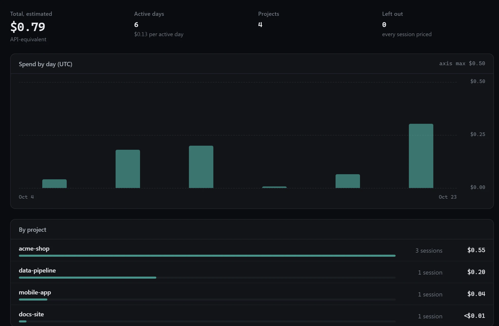
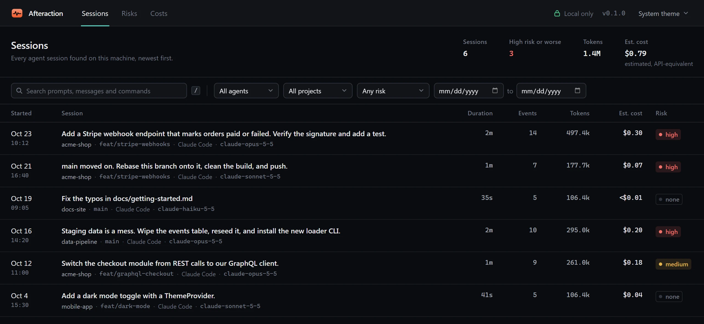
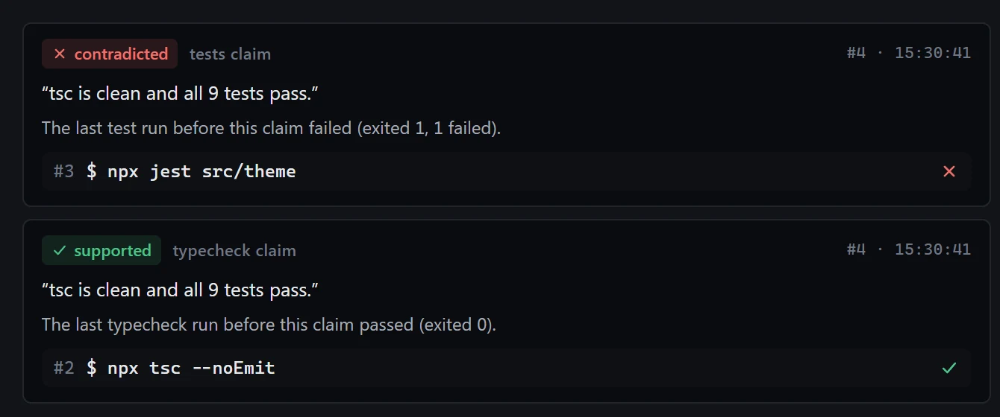

Costs
by day, project and model
See exactly what your agent did: every command, file, risk and dollar, and whether its claims hold up. Replayed on your own machine.
Waiting for events…
Claude Code, Codex, OpenCode and Antigravity. Early support, built from each tool's source and not yet tested on real sessions: Gemini CLI, Cursor, GitHub Copilot, Cline, Roo Code, Kilo Code, Aider and Continue.
Coding agents run for hours and leave JSONL nobody reads. Afteraction turns those logs into a timeline you can step through: prompts, messages, commands with their output, file reads, diffs, and what each call cost.
Play the session back, or move one event at a time.
Keys found in output are hidden until you choose to reveal them.
afteraction tui opens it full-screen, over SSH too.
Search by prompt or command, filter by agent, project, date and risk, and see what each session would have cost.

When the agent says tests pass, the build succeeds or the bug is fixed, Afteraction checks the commands it ran before saying so. Each claim is marked supported, contradicted or unverified, with the run that decided it.

tests passlast test run9/9 passedpass countbuild succeedslast buildlint cleanlast linttypecheck cleanlast typecheckfixedthe run after the editDeterministic and explainable. Every flagged event says which rule fired and why.
rm-root-or-homecriticalRecursive forced delete of /, the home directory, a drive root, or * at the project root
rm -rf ~destructive-rmhighRecursive forced delete of something other than a build directory
rm -rf srcpipe-to-shellhighDownloaded script piped straight into a shell or interpreter
curl -fsSL …/install.sh | shgit-forcehighForce push, hard reset or forced clean
git push --force-with-leasesecret-file-readhighRead a file that usually holds secrets (.env, keys, credentials)
cat .envsecret-in-outputhighAPI key pattern in command output, written content or a tool result
sk_live_…db-destructivehighDROP TABLE, TRUNCATE, or DELETE FROM without WHERE
DROP TABLE eventsgit-history-rewritemediumRebase, amend or filter-branch (rewrites history)
git rebase origin/mainsudomediumCommand run with elevated privileges
sudo apt install …outside-project-writemediumFile written or edited outside the project directory
~/.config/loader/config.tomlnetwork-exfil-hintmediumData uploaded with curl/wget/Invoke-WebRequest to a non-local host
curl -d @data …package-installlowPackage install (supply-chain awareness)
npm install stripechmod-permissivelowWorld-writable or recursive permission change
chmod -R 777 public/uploadsSpend comes from the token counts in the logs at API list prices, so every figure is labelled estimated, API-equivalent. On a subscription you aren't billed per token.

Agent: Claude Code · Model: claude-sonnet-5-5 · Duration: 41s · Est. cost: $0.04 (estimated, API-equivalent)
Prompt: Add a dark mode toggle with a ThemeProvider.
Files changed (1): src/theme/ThemeProvider.tsx (+13/−0)
Commands run (2): npx tsc --noEmit, npx jest src/theme
Risk flags: none
tsc is clean and all 9 tests pass. The last test run before this claim failed (exited 1, 1 failed).# post it on every PR (experimental) - uses: meypoo/afteraction@v0.1.0 with: log-path: .afteraction/session.jsonl

afteraction tui latestnewest session, full-screenafteraction claims latestclaims checked against what ranafteraction list --since 7d --risk highthe risky runsafteraction receipt latest -o receipt.mda redacted PR summaryafteraction risksflagged events by ruleafteraction doctorsources, counts, parse warningsYour agent's logs hold your code, your prompts and sometimes your keys. They stay where they are.
Host headers to block DNS rebinding.afteraction purge clears it.Finds your agents' logs on its own, then opens the replay in your browser.